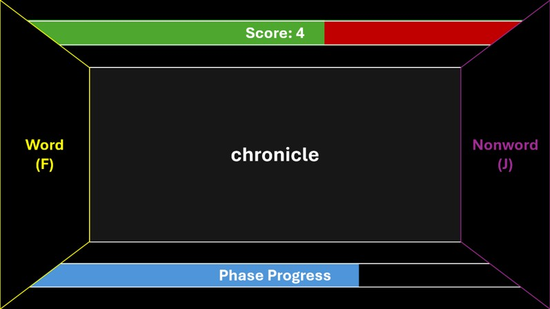
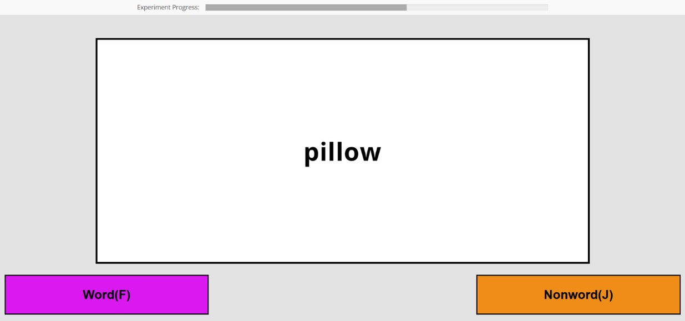
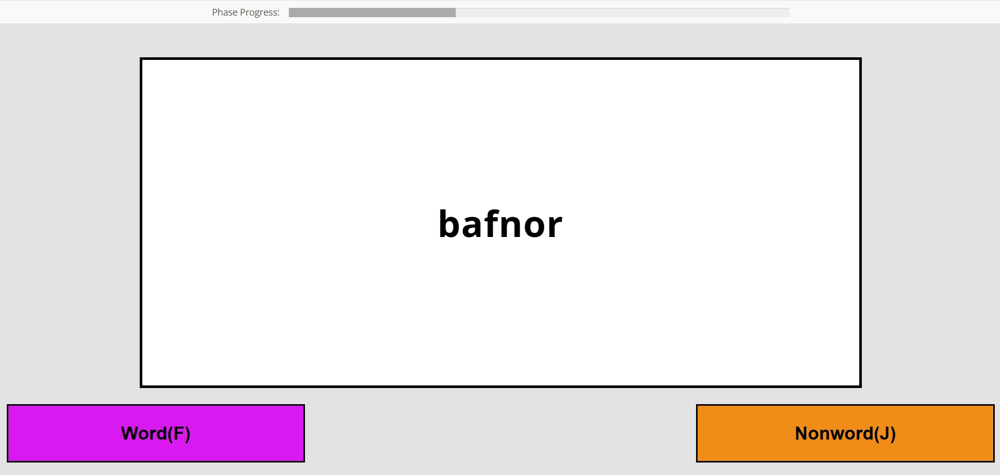

Classification Task Interface
Description & Motivation
During my Human Centered Computing course at NMSU, I set out to create a new user interface for classification tasks commonly used in psychological research.
Classification tasks require a participant to make a category decision about a given stimulus as quickly and accurately as possible. Generally, these tasks are very long and tedious, and can suffer from fatigue effects, as participants get bored and/or tired after spending an hour or more on the same task. With this in mind, I set out to design a new interface for these tasks.
Online Study
To begin, I opted to examine classification tasks that were available online. I manually reviewed 15 of these, and found several common shortcomings. First, these tasks tended to be very bland in design, with little or no use of color or contrast. Second, these tasks tended to give wildly inaccurate estimates of how much time they would take, if any estimate was given at all. Third, these tasks tended to not give the participant any performance feedback, even at the end of the experiment, leaving them with no idea of how well they performed.
Prototyping
I began prototyping with three main tasks I wanted the new interface to accomplish. First, it need to be a classification task. For the purposes of this project, I chose a lexical decision task specifically, so it needed to present participants with a letter string and allow them to decide if it is a word or a nonword, indicating their decision with a keypress. Second, I wanted participants to be able to see their progress through the experiment, so they knew how much they had left to do. Third, I wanted participants to recieve feedback on their performance.
I also had a few restrictions to keep in mind. First, many aspects of these tasks are manipulated in an experiment, so I needed to design the interface so these manipulations could be added or taken away. This is why I could not add accuracy feedback on every trial, as many experiments use that as an experimental manipulation. Second, and more importantly, I needed to minimize distraction as much as possible. If participants are distracted by the interface, their data won't be useful.
With these factors in mind, I created two prototypes:

Version 1 was more restrained, with a separate area where stimuli would appear, and color-coded boxes for the word and nonword options. These boxes would flash when the corresponding key was pressed, mimicking pressing a button. It also included a green progress bar and an accuracy percentage that would update every trial.
Version 2 was more unconventional, with a 3D-box style and larger color-coded areas for the options, which would also flash when the corresponding key was pressed. It also included a blue progress bar, and the feedback took the form of a score bar that would update every trial. Participants would earn 1 point for each correct answer, and lose 1 for each incorrect answer.
User Study 1
The first user study caused me to continue with the first version over the second version, though it went through significant design changes. Participants near universally disliked the flashing buttons in both versions, so those were discarded. Additionally, the 3D-box design of Version 2 was greatly disliked, and so it was also dropped. Importantly, when given a Likert survey to assess their opinions, the participants in user study 1 rated Version 2 as more distracting that Version 1, though both were more distracting than a control.
The results of user study 1 informed the creation of the next version of the task:
User Study 2
The second user study assessed the new version resulting from user study 1. When compared to a control version, the new experimental version was rated as significantly more engaging and distracting, though participants rated it higher on overall approval. Importantly, when participant response times were investigated, there was no significant difference between the control and experimental versions, suggesting that while participants felt more distracted, this did not significantly effect their response times.
The results of user study 2 resulted in the final version:
While this version looks very similar to the previous version, the progress bar was adjusted to accurately reflect experiment progress and feedback on participant performance, one of the main points of improvement from the start of this project, was added to the end.
A demonstration of this version is currently being hosted online, and I would encourage you to try it for yourself: Try it here!
This trial version will download a .csv file of your results to your computer. Eventually, I would like for experimenters to be able to use this interface without my involvement, simply by navigating to the web domain on a lab computer. However, there is still more work that needs to be done to accomplish that, so if you would like to use this interface in the meantime, please contact me via my email (listed on the left-hand side of this page).